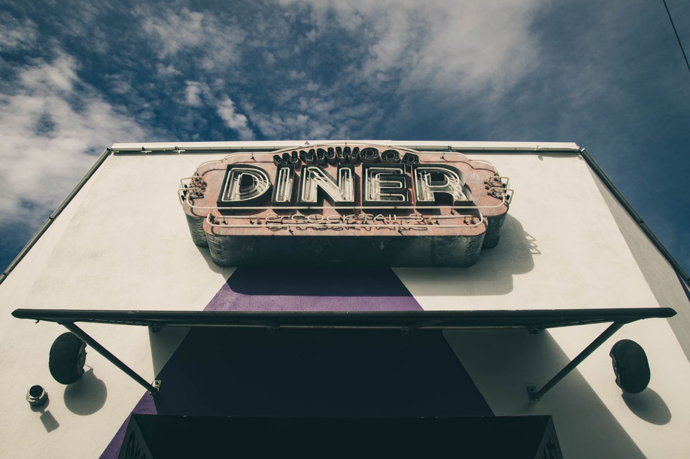
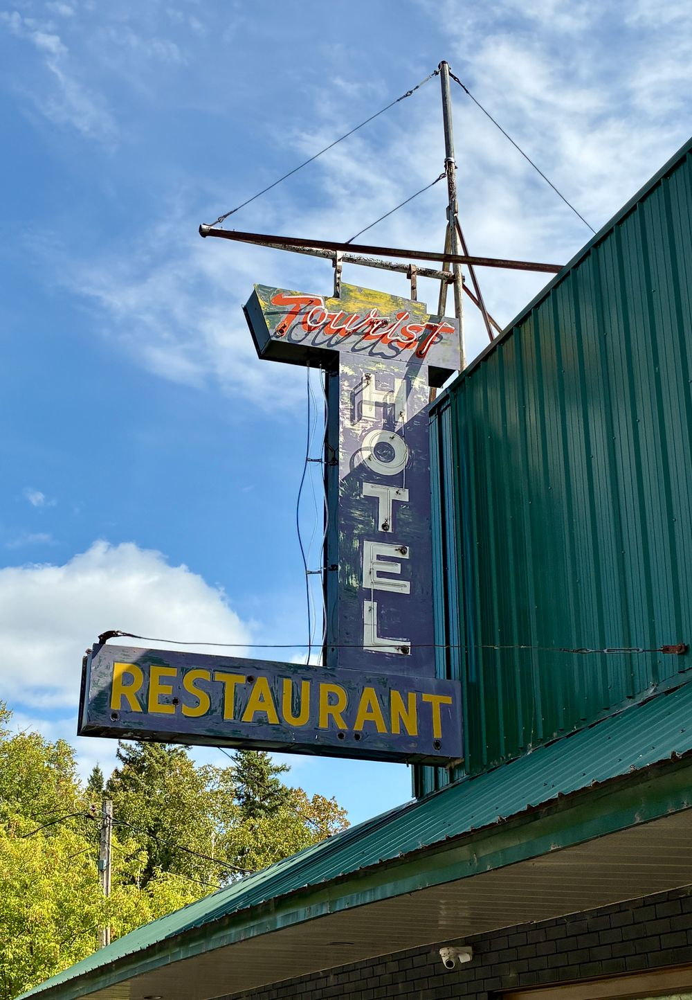
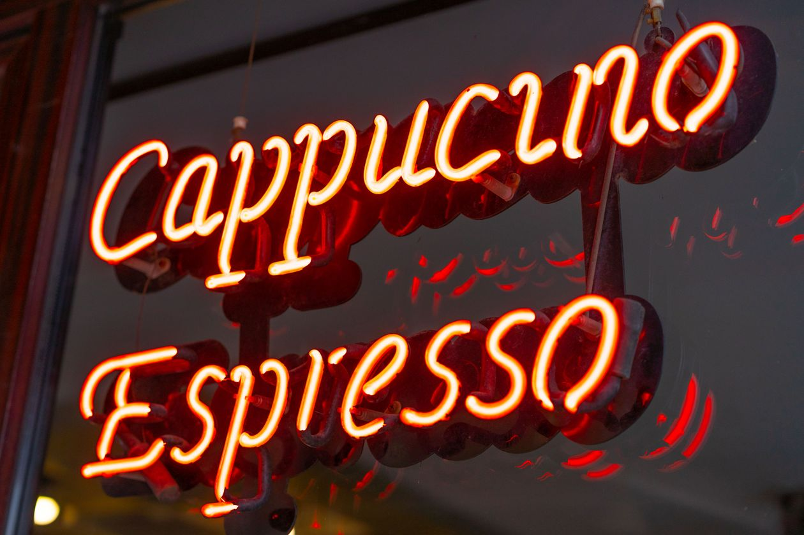

Index of British neon signs, 1932 to the present day · Kept by Walter Dombrowski, restorer & historian · Digbeth, Birmingham
From the index, opened up
Case files
Three entries from the current page of the index, told the way the archive tells everything: what was asked, what was decided, what happened. One saved, one lost, one still trading — because that is the true proportion of this work, and a case list of nothing but triumphs would be a brochure.
NR-001 · Fate: saved · 2023
The Regal Cinema, Kings Heath — the rescue the assessment called correctly
Sign
“REGAL” letters & starburst, rooftop parapet
Place
High Street, Kings Heath, Birmingham
Date
1936
Maker
Franco Signs, Birmingham
Grade at survey
3 · Failing
Original glass kept
46% of the letter tube; starburst whole

Reference photograph: a roadside sign of the Regal's period and construction. The Regal itself is photographed in its own record, held by the Trust. Photographer credited in CREDITS.md.
The brief
The Regal Cinema Trust had raised the money to reopen the 1936 picture house and wanted its rooftop sign lit for the first night — the letters and starburst that had been dark, by then, for nineteen years. The Trust's fear, stated plainly at the first meeting, was that a restorer would replace everything and call it restoration.
The decisions
The survey graded the sign 3 — failing. Five parapet letters at the archive's printed rate of 6 m of tube per letter is 30 m of glass; at Grade 3 the assessment expects 40% of it to survive, and the Trust was told, in writing and before any deposit, to expect roughly 12 m of original tube and 18 m of remake. The starburst border was tested separately and found sound throughout, which the assessment had not assumed. The R and the second A failed on the bench exactly as graded; both were remade to the original pattern and stamped “2023” on the reverse, where the next restorer will find it. New transformers went into the original cabinet positions, so the sign's wiring geography — part of its history — did not move.
The outcome
In the event, 13.8 m of the 30 m of letter tube tested sound and stayed — 46% against the 40% the assessment had promised — and the starburst went back whole. Bench time on the letters came to 25 hours: five letters at the printed Grade 3 rate of five hours, the assessed figure to the hour. The Regal has lit the high street every night since its reopening in October 2023, and the Trust holds the full record — survey, photographs, rubbings and the bench log. The trustee's verdict on the work is on the index page, attached to this entry, where it belongs.
NR-014 · Fate: lost · 2019
The Blue Boar Hotel, Alcester — documented in eleven days, then demolished
Sign
Boar & letters, wall-mounted over the inn yard
Place
Alcester, Warwickshire
Date
c. 1954
Maker
Not recorded — and not invented
Grade at survey
4 · Derelict
Original glass kept
None — two letters & the pattern board salvaged

Reference photograph: a tourist hotel sign of the Blue Boar's era, still standing elsewhere. No photograph of the Boar lit exists in the archive; the record holds it unlit, at dusk, as it was found. Photographer credited in CREDITS.md.
The brief
The Blue Boar had been closed for six years when the site was sold for flats. A member of the Alcester history society — not the developer, not the owner — telephoned the archive on a Monday. Demolition was due to start the following week but one. Eleven days is what the archive had.
The decisions
The sign graded 4 on the first ladder up: the boar's outline tube was smashed in two places, the cabinet was rotten through, and expected survival of the original glass stood at 10%. Under the archive's own Table C, that is beyond tube rescue, and the developer — who had offered, late, to “have it restored” for the sales suite — was told so in writing. What the eleven days could honestly buy was a record: the sign photographed lit (it would not light; that fact is in the record too) and unlit at dusk, a full-size rubbing of the boar taken off the wall, measured drawings of every letter, and the gas and glass notes from the surviving sections. With the demolition contractor's written permission, two letters and the painted pattern board were taken down on the last day. The rest of the sign went with the building, on a Tuesday, in the rain. That sentence is in the record as well.
The outcome
The Blue Boar is lost, and its index entry says so in the fate column, in red, permanently. The record and the two letters are held by the Alcester history society, where the boar's rubbing is on the wall. The archive counts this file among its proper work: a town that loses a sign should at least not lose the knowledge of it. The flats that replaced the hotel are called Boar Court. The archive did not choose the name and draws no conclusion from it.
NR-027 · Fate: saved · 2024
Ferraro's Café, Bristol — the family sign, kept in the family glass
Sign
Window script, “Ferraro's”, nine letters & underline
Place
Stokes Croft, Bristol
Date
1962
Maker
Signs of the Times, Bristol
Grade at survey
2 · Weathered
Original glass kept
82%

Reference photograph: café window script of the Ferraro's type and period. The café's own sign is photographed in its condition report, which the family keeps. Photographer credited in CREDITS.md.
The brief
Ferraro's has been run by the same family since 1958. The 1962 window script — bent, the family believes, by the grandfather's friend — had faded to a flicker on two letters, and the third generation wanted it back before the café's sixty-fifth year. Their condition, non-negotiable: the sign above their door had to remain their grandfather's sign, not a new one in its shape.
The decisions
The ethics decisions were itemised in the condition report before the bench work began, and they are repeated here because this is what restoration means at this archive. One: the cracked F was repaired with a spliced section rather than replaced whole — a splice is visible to anyone who looks closely, and the report says where it is. Two: 82% of the original glass was cleaned, tested and kept; the two failed letters were remade to the rubbing and stamped with their year on the reverse. Three: the transformer was the only component replaced with a modern equivalent, and it is recorded as exactly that — the single non-period part in the sign. Four: nothing was “improved”. The script's slight irregularities, which are the bender's handwriting, were left alone.
The outcome
The sign was relit in March 2024, at dusk, with three generations of the family on the pavement — a photograph of which is theirs, not the archive's. The café still trades under it. The condition report lives in a drawer by the till, which the archive considers the correct place for it, and the index entry carries the figure that matters: 82% original glass, kept.
Your sign could be a case file — or an index line with a wall in it
The difference is usually a telephone call made a month earlier. The archive takes reports from anyone: owners, neighbours, history societies, demolition crews with a conscience.